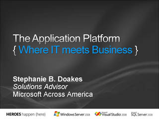

Keynote: Dynamic IT and the 2008 Launch Wave
 Speaker(s): Chris Sakolosky, Jon Roskill
Speaker(s): Chris Sakolosky, Jon Roskill
What's New in Windows Server 2008
Speaker(s): John Weston
Virtualization and Your Infrastructure
Speaker(s): John Weston
Securing Your IT Infrastructure with Windows Server 2008
Speaker(s): John Weston
Exploring Windows Server 2008 Web and Application Technologies
Speaker(s): John Weston
Enabling Dynamic IT and Optimizing Your Infrastructure, Processes and People
Speaker(s): Stephanie Doakes
Optimizing Your IT Infrastructure with Windows Server 2008
Speaker(s): Stephanie Doakes
The Application Platform: Where IT Meets Business

Speaker(s): Stephanie Doakes
Mission Critical Applications on SQL Server 2008
Speaker(s): Sri Sridharan
Simplify Management of Your Data Infrastructure
 Speaker(s): Sri Sridharan
Speaker(s): Sri Sridharan
Exploring Business Intelligence and SQL Server 2008
 Speaker(s): Brad Nelson
Speaker(s): Brad Nelson
Next Generation Data Applications
Speaker(s): Johnathan Swartz
Breaking Through Software Development Challenges with Visual Studio 2008
Speaker(s): Chris Koenig
Reach End-Users with Next Generation Web Applications
Speaker(s): Chris Koenig
Visual Studio 2008 and Microsoft Office System
Speaker(s): Zain Naboulsi
Defy Occationally-Connected Challenges with Smart Client Applications
Speaker(s): Zain Naboulsi